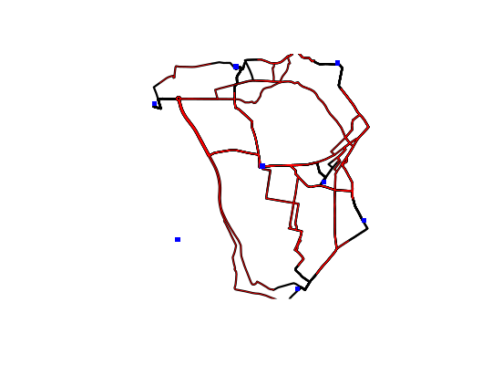
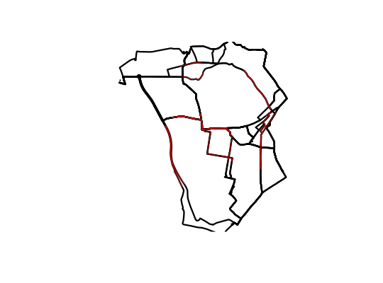

Takes lines and removes the start and end point, to a distance determined by the user.
toptail(l, toptail_dist, ...)
| l | A SpatialLines object |
|---|---|
| toptail_dist | The distance (in metres) to top and tail the line by. Can either be a single value or a vector of the same length as the SpatialLines object. |
| ... | Arguments passed to rgeos::gBuffer() |
Note: toptailgs is around 10 times faster, but only works
on data with geographic CRS's due to its reliance on the geosphere
package.
data("routes_fast") sp::proj4string(routes_fast) <- CRS("+init=epsg:4326") r_toptail <- toptail(routes_fast, toptail_dist = 300)#> Transforming to CRS +proj=aeqd +lat_0=53.82887409 +lon_0=-1.51673372 +x_0=0 +y_0=0 +ellps=WGS84#> Running function on a temporary projected version of the Spatial object using the CRS: +proj=aeqd +lat_0=53.82887409 +lon_0=-1.51673372 +x_0=0 +y_0=0 +ellps=WGS84#> Line 1 is completely removed by the clip and is omitted from the results#> Transforming to CRS +proj=aeqd +lat_0=53.828499 +lon_0=-1.5262985 +x_0=0 +y_0=0 +ellps=WGS84#> Running function on a temporary projected version of the Spatial object using the CRS: +proj=aeqd +lat_0=53.828499 +lon_0=-1.5262985 +x_0=0 +y_0=0 +ellps=WGS84#> Transforming to CRS +proj=aeqd +lat_0=53.8263835 +lon_0=-1.533856 +x_0=0 +y_0=0 +ellps=WGS84#> Running function on a temporary projected version of the Spatial object using the CRS: +proj=aeqd +lat_0=53.8263835 +lon_0=-1.533856 +x_0=0 +y_0=0 +ellps=WGS84#> Transforming to CRS +proj=aeqd +lat_0=53.8230935 +lon_0=-1.5237205 +x_0=0 +y_0=0 +ellps=WGS84#> Running function on a temporary projected version of the Spatial object using the CRS: +proj=aeqd +lat_0=53.8230935 +lon_0=-1.5237205 +x_0=0 +y_0=0 +ellps=WGS84#> Transforming to CRS +proj=aeqd +lat_0=53.8222255 +lon_0=-1.5180485 +x_0=0 +y_0=0 +ellps=WGS84#> Running function on a temporary projected version of the Spatial object using the CRS: +proj=aeqd +lat_0=53.8222255 +lon_0=-1.5180485 +x_0=0 +y_0=0 +ellps=WGS84#> Transforming to CRS +proj=aeqd +lat_0=53.820118 +lon_0=-1.514385 +x_0=0 +y_0=0 +ellps=WGS84#> Running function on a temporary projected version of the Spatial object using the CRS: +proj=aeqd +lat_0=53.820118 +lon_0=-1.514385 +x_0=0 +y_0=0 +ellps=WGS84#> Transforming to CRS +proj=aeqd +lat_0=53.816334 +lon_0=-1.5203885 +x_0=0 +y_0=0 +ellps=WGS84#> Running function on a temporary projected version of the Spatial object using the CRS: +proj=aeqd +lat_0=53.816334 +lon_0=-1.5203885 +x_0=0 +y_0=0 +ellps=WGS84#> Transforming to CRS +proj=aeqd +lat_0=53.828499 +lon_0=-1.5262985 +x_0=0 +y_0=0 +ellps=WGS84#> Running function on a temporary projected version of the Spatial object using the CRS: +proj=aeqd +lat_0=53.828499 +lon_0=-1.5262985 +x_0=0 +y_0=0 +ellps=WGS84#> Transforming to CRS +proj=aeqd +lat_0=53.82847286 +lon_0=-1.53561681 +x_0=0 +y_0=0 +ellps=WGS84#> Running function on a temporary projected version of the Spatial object using the CRS: +proj=aeqd +lat_0=53.82847286 +lon_0=-1.53561681 +x_0=0 +y_0=0 +ellps=WGS84#> Line 9 is completely removed by the clip and is omitted from the results#> Transforming to CRS +proj=aeqd +lat_0=53.8262005 +lon_0=-1.5434065 +x_0=0 +y_0=0 +ellps=WGS84#> Running function on a temporary projected version of the Spatial object using the CRS: +proj=aeqd +lat_0=53.8262005 +lon_0=-1.5434065 +x_0=0 +y_0=0 +ellps=WGS84#> Transforming to CRS +proj=aeqd +lat_0=53.8229105 +lon_0=-1.533271 +x_0=0 +y_0=0 +ellps=WGS84#> Running function on a temporary projected version of the Spatial object using the CRS: +proj=aeqd +lat_0=53.8229105 +lon_0=-1.533271 +x_0=0 +y_0=0 +ellps=WGS84#> Transforming to CRS +proj=aeqd +lat_0=53.8220425 +lon_0=-1.527599 +x_0=0 +y_0=0 +ellps=WGS84#> Running function on a temporary projected version of the Spatial object using the CRS: +proj=aeqd +lat_0=53.8220425 +lon_0=-1.527599 +x_0=0 +y_0=0 +ellps=WGS84#> Transforming to CRS +proj=aeqd +lat_0=53.819935 +lon_0=-1.5239355 +x_0=0 +y_0=0 +ellps=WGS84#> Running function on a temporary projected version of the Spatial object using the CRS: +proj=aeqd +lat_0=53.819935 +lon_0=-1.5239355 +x_0=0 +y_0=0 +ellps=WGS84#> Transforming to CRS +proj=aeqd +lat_0=53.816151 +lon_0=-1.529939 +x_0=0 +y_0=0 +ellps=WGS84#> Running function on a temporary projected version of the Spatial object using the CRS: +proj=aeqd +lat_0=53.816151 +lon_0=-1.529939 +x_0=0 +y_0=0 +ellps=WGS84#> Transforming to CRS +proj=aeqd +lat_0=53.8263835 +lon_0=-1.533856 +x_0=0 +y_0=0 +ellps=WGS84#> Running function on a temporary projected version of the Spatial object using the CRS: +proj=aeqd +lat_0=53.8263835 +lon_0=-1.533856 +x_0=0 +y_0=0 +ellps=WGS84#> Transforming to CRS +proj=aeqd +lat_0=53.8262005 +lon_0=-1.5434065 +x_0=0 +y_0=0 +ellps=WGS84#> Running function on a temporary projected version of the Spatial object using the CRS: +proj=aeqd +lat_0=53.8262005 +lon_0=-1.5434065 +x_0=0 +y_0=0 +ellps=WGS84#> Transforming to CRS +proj=aeqd +lat_0=53.82442015 +lon_0=-1.5508065 +x_0=0 +y_0=0 +ellps=WGS84#> Running function on a temporary projected version of the Spatial object using the CRS: +proj=aeqd +lat_0=53.82442015 +lon_0=-1.5508065 +x_0=0 +y_0=0 +ellps=WGS84#> Line 17 is completely removed by the clip and is omitted from the results#> Transforming to CRS +proj=aeqd +lat_0=53.820795 +lon_0=-1.5408285 +x_0=0 +y_0=0 +ellps=WGS84#> Running function on a temporary projected version of the Spatial object using the CRS: +proj=aeqd +lat_0=53.820795 +lon_0=-1.5408285 +x_0=0 +y_0=0 +ellps=WGS84#> Transforming to CRS +proj=aeqd +lat_0=53.819927 +lon_0=-1.5351565 +x_0=0 +y_0=0 +ellps=WGS84#> Running function on a temporary projected version of the Spatial object using the CRS: +proj=aeqd +lat_0=53.819927 +lon_0=-1.5351565 +x_0=0 +y_0=0 +ellps=WGS84#> Transforming to CRS +proj=aeqd +lat_0=53.8178195 +lon_0=-1.531493 +x_0=0 +y_0=0 +ellps=WGS84#> Running function on a temporary projected version of the Spatial object using the CRS: +proj=aeqd +lat_0=53.8178195 +lon_0=-1.531493 +x_0=0 +y_0=0 +ellps=WGS84#> Transforming to CRS +proj=aeqd +lat_0=53.8140355 +lon_0=-1.5374965 +x_0=0 +y_0=0 +ellps=WGS84#> Running function on a temporary projected version of the Spatial object using the CRS: +proj=aeqd +lat_0=53.8140355 +lon_0=-1.5374965 +x_0=0 +y_0=0 +ellps=WGS84#> Transforming to CRS +proj=aeqd +lat_0=53.8230935 +lon_0=-1.5237205 +x_0=0 +y_0=0 +ellps=WGS84#> Running function on a temporary projected version of the Spatial object using the CRS: +proj=aeqd +lat_0=53.8230935 +lon_0=-1.5237205 +x_0=0 +y_0=0 +ellps=WGS84#> Transforming to CRS +proj=aeqd +lat_0=53.8229105 +lon_0=-1.533271 +x_0=0 +y_0=0 +ellps=WGS84#> Running function on a temporary projected version of the Spatial object using the CRS: +proj=aeqd +lat_0=53.8229105 +lon_0=-1.533271 +x_0=0 +y_0=0 +ellps=WGS84#> Transforming to CRS +proj=aeqd +lat_0=53.820795 +lon_0=-1.5408285 +x_0=0 +y_0=0 +ellps=WGS84#> Running function on a temporary projected version of the Spatial object using the CRS: +proj=aeqd +lat_0=53.820795 +lon_0=-1.5408285 +x_0=0 +y_0=0 +ellps=WGS84#> Transforming to CRS +proj=aeqd +lat_0=53.81755619 +lon_0=-1.53071233 +x_0=0 +y_0=0 +ellps=WGS84#> Running function on a temporary projected version of the Spatial object using the CRS: +proj=aeqd +lat_0=53.81755619 +lon_0=-1.53071233 +x_0=0 +y_0=0 +ellps=WGS84#> Line 25 is completely removed by the clip and is omitted from the results#> Transforming to CRS +proj=aeqd +lat_0=53.816637 +lon_0=-1.525021 +x_0=0 +y_0=0 +ellps=WGS84#> Running function on a temporary projected version of the Spatial object using the CRS: +proj=aeqd +lat_0=53.816637 +lon_0=-1.525021 +x_0=0 +y_0=0 +ellps=WGS84#> Transforming to CRS +proj=aeqd +lat_0=53.8145295 +lon_0=-1.5213575 +x_0=0 +y_0=0 +ellps=WGS84#> Running function on a temporary projected version of the Spatial object using the CRS: +proj=aeqd +lat_0=53.8145295 +lon_0=-1.5213575 +x_0=0 +y_0=0 +ellps=WGS84#> Transforming to CRS +proj=aeqd +lat_0=53.8107455 +lon_0=-1.527361 +x_0=0 +y_0=0 +ellps=WGS84#> Running function on a temporary projected version of the Spatial object using the CRS: +proj=aeqd +lat_0=53.8107455 +lon_0=-1.527361 +x_0=0 +y_0=0 +ellps=WGS84#> Transforming to CRS +proj=aeqd +lat_0=53.8222255 +lon_0=-1.5180485 +x_0=0 +y_0=0 +ellps=WGS84#> Running function on a temporary projected version of the Spatial object using the CRS: +proj=aeqd +lat_0=53.8222255 +lon_0=-1.5180485 +x_0=0 +y_0=0 +ellps=WGS84#> Transforming to CRS +proj=aeqd +lat_0=53.8220425 +lon_0=-1.527599 +x_0=0 +y_0=0 +ellps=WGS84#> Running function on a temporary projected version of the Spatial object using the CRS: +proj=aeqd +lat_0=53.8220425 +lon_0=-1.527599 +x_0=0 +y_0=0 +ellps=WGS84#> Transforming to CRS +proj=aeqd +lat_0=53.819927 +lon_0=-1.5351565 +x_0=0 +y_0=0 +ellps=WGS84#> Running function on a temporary projected version of the Spatial object using the CRS: +proj=aeqd +lat_0=53.819927 +lon_0=-1.5351565 +x_0=0 +y_0=0 +ellps=WGS84#> Transforming to CRS +proj=aeqd +lat_0=53.816637 +lon_0=-1.525021 +x_0=0 +y_0=0 +ellps=WGS84#> Running function on a temporary projected version of the Spatial object using the CRS: +proj=aeqd +lat_0=53.816637 +lon_0=-1.525021 +x_0=0 +y_0=0 +ellps=WGS84#> Transforming to CRS +proj=aeqd +lat_0=53.81579603 +lon_0=-1.51931753 +x_0=0 +y_0=0 +ellps=WGS84#> Running function on a temporary projected version of the Spatial object using the CRS: +proj=aeqd +lat_0=53.81579603 +lon_0=-1.51931753 +x_0=0 +y_0=0 +ellps=WGS84#> Line 33 is completely removed by the clip and is omitted from the results#> Transforming to CRS +proj=aeqd +lat_0=53.8136615 +lon_0=-1.5156855 +x_0=0 +y_0=0 +ellps=WGS84#> Running function on a temporary projected version of the Spatial object using the CRS: +proj=aeqd +lat_0=53.8136615 +lon_0=-1.5156855 +x_0=0 +y_0=0 +ellps=WGS84#> Transforming to CRS +proj=aeqd +lat_0=53.8098775 +lon_0=-1.521689 +x_0=0 +y_0=0 +ellps=WGS84#> Running function on a temporary projected version of the Spatial object using the CRS: +proj=aeqd +lat_0=53.8098775 +lon_0=-1.521689 +x_0=0 +y_0=0 +ellps=WGS84#> Transforming to CRS +proj=aeqd +lat_0=53.820118 +lon_0=-1.514385 +x_0=0 +y_0=0 +ellps=WGS84#> Running function on a temporary projected version of the Spatial object using the CRS: +proj=aeqd +lat_0=53.820118 +lon_0=-1.514385 +x_0=0 +y_0=0 +ellps=WGS84#> Transforming to CRS +proj=aeqd +lat_0=53.819935 +lon_0=-1.5239355 +x_0=0 +y_0=0 +ellps=WGS84#> Running function on a temporary projected version of the Spatial object using the CRS: +proj=aeqd +lat_0=53.819935 +lon_0=-1.5239355 +x_0=0 +y_0=0 +ellps=WGS84#> Transforming to CRS +proj=aeqd +lat_0=53.8178195 +lon_0=-1.531493 +x_0=0 +y_0=0 +ellps=WGS84#> Running function on a temporary projected version of the Spatial object using the CRS: +proj=aeqd +lat_0=53.8178195 +lon_0=-1.531493 +x_0=0 +y_0=0 +ellps=WGS84#> Transforming to CRS +proj=aeqd +lat_0=53.8145295 +lon_0=-1.5213575 +x_0=0 +y_0=0 +ellps=WGS84#> Running function on a temporary projected version of the Spatial object using the CRS: +proj=aeqd +lat_0=53.8145295 +lon_0=-1.5213575 +x_0=0 +y_0=0 +ellps=WGS84#> Transforming to CRS +proj=aeqd +lat_0=53.8136615 +lon_0=-1.5156855 +x_0=0 +y_0=0 +ellps=WGS84#> Running function on a temporary projected version of the Spatial object using the CRS: +proj=aeqd +lat_0=53.8136615 +lon_0=-1.5156855 +x_0=0 +y_0=0 +ellps=WGS84#> Transforming to CRS +proj=aeqd +lat_0=53.81161098 +lon_0=-1.51186139 +x_0=0 +y_0=0 +ellps=WGS84#> Running function on a temporary projected version of the Spatial object using the CRS: +proj=aeqd +lat_0=53.81161098 +lon_0=-1.51186139 +x_0=0 +y_0=0 +ellps=WGS84#> Line 41 is completely removed by the clip and is omitted from the results#> Transforming to CRS +proj=aeqd +lat_0=53.80777 +lon_0=-1.5180255 +x_0=0 +y_0=0 +ellps=WGS84#> Running function on a temporary projected version of the Spatial object using the CRS: +proj=aeqd +lat_0=53.80777 +lon_0=-1.5180255 +x_0=0 +y_0=0 +ellps=WGS84#> Transforming to CRS +proj=aeqd +lat_0=53.816334 +lon_0=-1.5203885 +x_0=0 +y_0=0 +ellps=WGS84#> Running function on a temporary projected version of the Spatial object using the CRS: +proj=aeqd +lat_0=53.816334 +lon_0=-1.5203885 +x_0=0 +y_0=0 +ellps=WGS84#> Transforming to CRS +proj=aeqd +lat_0=53.816151 +lon_0=-1.529939 +x_0=0 +y_0=0 +ellps=WGS84#> Running function on a temporary projected version of the Spatial object using the CRS: +proj=aeqd +lat_0=53.816151 +lon_0=-1.529939 +x_0=0 +y_0=0 +ellps=WGS84#> Transforming to CRS +proj=aeqd +lat_0=53.8140355 +lon_0=-1.5374965 +x_0=0 +y_0=0 +ellps=WGS84#> Running function on a temporary projected version of the Spatial object using the CRS: +proj=aeqd +lat_0=53.8140355 +lon_0=-1.5374965 +x_0=0 +y_0=0 +ellps=WGS84#> Transforming to CRS +proj=aeqd +lat_0=53.8107455 +lon_0=-1.527361 +x_0=0 +y_0=0 +ellps=WGS84#> Running function on a temporary projected version of the Spatial object using the CRS: +proj=aeqd +lat_0=53.8107455 +lon_0=-1.527361 +x_0=0 +y_0=0 +ellps=WGS84#> Transforming to CRS +proj=aeqd +lat_0=53.8098775 +lon_0=-1.521689 +x_0=0 +y_0=0 +ellps=WGS84#> Running function on a temporary projected version of the Spatial object using the CRS: +proj=aeqd +lat_0=53.8098775 +lon_0=-1.521689 +x_0=0 +y_0=0 +ellps=WGS84#> Transforming to CRS +proj=aeqd +lat_0=53.80777 +lon_0=-1.5180255 +x_0=0 +y_0=0 +ellps=WGS84#> Running function on a temporary projected version of the Spatial object using the CRS: +proj=aeqd +lat_0=53.80777 +lon_0=-1.5180255 +x_0=0 +y_0=0 +ellps=WGS84#> Transforming to CRS +proj=aeqd +lat_0=53.80409845 +lon_0=-1.5242047 +x_0=0 +y_0=0 +ellps=WGS84#> Running function on a temporary projected version of the Spatial object using the CRS: +proj=aeqd +lat_0=53.80409845 +lon_0=-1.5242047 +x_0=0 +y_0=0 +ellps=WGS84#> Line 49 is completely removed by the clip and is omitted from the resultsplot(routes_fast, lwd = 3)plot(r_toptail, col = "red", add = TRUE)plot(cents, col = "blue", add = TRUE, pch = 15)# Note the behaviour when the buffer size removes lines r_toptail <- toptail(routes_fast, toptail_dist = 1000)#> Transforming to CRS +proj=aeqd +lat_0=53.82887409 +lon_0=-1.51673372 +x_0=0 +y_0=0 +ellps=WGS84#> Running function on a temporary projected version of the Spatial object using the CRS: +proj=aeqd +lat_0=53.82887409 +lon_0=-1.51673372 +x_0=0 +y_0=0 +ellps=WGS84#> Line 1 is completely removed by the clip and is omitted from the results#> Transforming to CRS +proj=aeqd +lat_0=53.828499 +lon_0=-1.5262985 +x_0=0 +y_0=0 +ellps=WGS84#> Running function on a temporary projected version of the Spatial object using the CRS: +proj=aeqd +lat_0=53.828499 +lon_0=-1.5262985 +x_0=0 +y_0=0 +ellps=WGS84#> Line 2 is completely removed by the clip and is omitted from the results#> Transforming to CRS +proj=aeqd +lat_0=53.8263835 +lon_0=-1.533856 +x_0=0 +y_0=0 +ellps=WGS84#> Running function on a temporary projected version of the Spatial object using the CRS: +proj=aeqd +lat_0=53.8263835 +lon_0=-1.533856 +x_0=0 +y_0=0 +ellps=WGS84#> Transforming to CRS +proj=aeqd +lat_0=53.8230935 +lon_0=-1.5237205 +x_0=0 +y_0=0 +ellps=WGS84#> Running function on a temporary projected version of the Spatial object using the CRS: +proj=aeqd +lat_0=53.8230935 +lon_0=-1.5237205 +x_0=0 +y_0=0 +ellps=WGS84#> Line 4 is completely removed by the clip and is omitted from the results#> Transforming to CRS +proj=aeqd +lat_0=53.8222255 +lon_0=-1.5180485 +x_0=0 +y_0=0 +ellps=WGS84#> Running function on a temporary projected version of the Spatial object using the CRS: +proj=aeqd +lat_0=53.8222255 +lon_0=-1.5180485 +x_0=0 +y_0=0 +ellps=WGS84#> Line 5 is completely removed by the clip and is omitted from the results#> Transforming to CRS +proj=aeqd +lat_0=53.820118 +lon_0=-1.514385 +x_0=0 +y_0=0 +ellps=WGS84#> Running function on a temporary projected version of the Spatial object using the CRS: +proj=aeqd +lat_0=53.820118 +lon_0=-1.514385 +x_0=0 +y_0=0 +ellps=WGS84#> Line 6 is completely removed by the clip and is omitted from the results#> Transforming to CRS +proj=aeqd +lat_0=53.816334 +lon_0=-1.5203885 +x_0=0 +y_0=0 +ellps=WGS84#> Running function on a temporary projected version of the Spatial object using the CRS: +proj=aeqd +lat_0=53.816334 +lon_0=-1.5203885 +x_0=0 +y_0=0 +ellps=WGS84#> Transforming to CRS +proj=aeqd +lat_0=53.828499 +lon_0=-1.5262985 +x_0=0 +y_0=0 +ellps=WGS84#> Running function on a temporary projected version of the Spatial object using the CRS: +proj=aeqd +lat_0=53.828499 +lon_0=-1.5262985 +x_0=0 +y_0=0 +ellps=WGS84#> Line 8 is completely removed by the clip and is omitted from the results#> Transforming to CRS +proj=aeqd +lat_0=53.82847286 +lon_0=-1.53561681 +x_0=0 +y_0=0 +ellps=WGS84#> Running function on a temporary projected version of the Spatial object using the CRS: +proj=aeqd +lat_0=53.82847286 +lon_0=-1.53561681 +x_0=0 +y_0=0 +ellps=WGS84#> Line 9 is completely removed by the clip and is omitted from the results#> Transforming to CRS +proj=aeqd +lat_0=53.8262005 +lon_0=-1.5434065 +x_0=0 +y_0=0 +ellps=WGS84#> Running function on a temporary projected version of the Spatial object using the CRS: +proj=aeqd +lat_0=53.8262005 +lon_0=-1.5434065 +x_0=0 +y_0=0 +ellps=WGS84#> Line 10 is completely removed by the clip and is omitted from the results#> Transforming to CRS +proj=aeqd +lat_0=53.8229105 +lon_0=-1.533271 +x_0=0 +y_0=0 +ellps=WGS84#> Running function on a temporary projected version of the Spatial object using the CRS: +proj=aeqd +lat_0=53.8229105 +lon_0=-1.533271 +x_0=0 +y_0=0 +ellps=WGS84#> Line 11 is completely removed by the clip and is omitted from the results#> Transforming to CRS +proj=aeqd +lat_0=53.8220425 +lon_0=-1.527599 +x_0=0 +y_0=0 +ellps=WGS84#> Running function on a temporary projected version of the Spatial object using the CRS: +proj=aeqd +lat_0=53.8220425 +lon_0=-1.527599 +x_0=0 +y_0=0 +ellps=WGS84#> Line 12 is completely removed by the clip and is omitted from the results#> Transforming to CRS +proj=aeqd +lat_0=53.819935 +lon_0=-1.5239355 +x_0=0 +y_0=0 +ellps=WGS84#> Running function on a temporary projected version of the Spatial object using the CRS: +proj=aeqd +lat_0=53.819935 +lon_0=-1.5239355 +x_0=0 +y_0=0 +ellps=WGS84#> Transforming to CRS +proj=aeqd +lat_0=53.816151 +lon_0=-1.529939 +x_0=0 +y_0=0 +ellps=WGS84#> Running function on a temporary projected version of the Spatial object using the CRS: +proj=aeqd +lat_0=53.816151 +lon_0=-1.529939 +x_0=0 +y_0=0 +ellps=WGS84#> Transforming to CRS +proj=aeqd +lat_0=53.8263835 +lon_0=-1.533856 +x_0=0 +y_0=0 +ellps=WGS84#> Running function on a temporary projected version of the Spatial object using the CRS: +proj=aeqd +lat_0=53.8263835 +lon_0=-1.533856 +x_0=0 +y_0=0 +ellps=WGS84#> Transforming to CRS +proj=aeqd +lat_0=53.8262005 +lon_0=-1.5434065 +x_0=0 +y_0=0 +ellps=WGS84#> Running function on a temporary projected version of the Spatial object using the CRS: +proj=aeqd +lat_0=53.8262005 +lon_0=-1.5434065 +x_0=0 +y_0=0 +ellps=WGS84#> Line 16 is completely removed by the clip and is omitted from the results#> Transforming to CRS +proj=aeqd +lat_0=53.82442015 +lon_0=-1.5508065 +x_0=0 +y_0=0 +ellps=WGS84#> Running function on a temporary projected version of the Spatial object using the CRS: +proj=aeqd +lat_0=53.82442015 +lon_0=-1.5508065 +x_0=0 +y_0=0 +ellps=WGS84#> Line 17 is completely removed by the clip and is omitted from the results#> Transforming to CRS +proj=aeqd +lat_0=53.820795 +lon_0=-1.5408285 +x_0=0 +y_0=0 +ellps=WGS84#> Running function on a temporary projected version of the Spatial object using the CRS: +proj=aeqd +lat_0=53.820795 +lon_0=-1.5408285 +x_0=0 +y_0=0 +ellps=WGS84#> Line 18 is completely removed by the clip and is omitted from the results#> Transforming to CRS +proj=aeqd +lat_0=53.819927 +lon_0=-1.5351565 +x_0=0 +y_0=0 +ellps=WGS84#> Running function on a temporary projected version of the Spatial object using the CRS: +proj=aeqd +lat_0=53.819927 +lon_0=-1.5351565 +x_0=0 +y_0=0 +ellps=WGS84#> Transforming to CRS +proj=aeqd +lat_0=53.8178195 +lon_0=-1.531493 +x_0=0 +y_0=0 +ellps=WGS84#> Running function on a temporary projected version of the Spatial object using the CRS: +proj=aeqd +lat_0=53.8178195 +lon_0=-1.531493 +x_0=0 +y_0=0 +ellps=WGS84#> Transforming to CRS +proj=aeqd +lat_0=53.8140355 +lon_0=-1.5374965 +x_0=0 +y_0=0 +ellps=WGS84#> Running function on a temporary projected version of the Spatial object using the CRS: +proj=aeqd +lat_0=53.8140355 +lon_0=-1.5374965 +x_0=0 +y_0=0 +ellps=WGS84#> Transforming to CRS +proj=aeqd +lat_0=53.8230935 +lon_0=-1.5237205 +x_0=0 +y_0=0 +ellps=WGS84#> Running function on a temporary projected version of the Spatial object using the CRS: +proj=aeqd +lat_0=53.8230935 +lon_0=-1.5237205 +x_0=0 +y_0=0 +ellps=WGS84#> Transforming to CRS +proj=aeqd +lat_0=53.8229105 +lon_0=-1.533271 +x_0=0 +y_0=0 +ellps=WGS84#> Running function on a temporary projected version of the Spatial object using the CRS: +proj=aeqd +lat_0=53.8229105 +lon_0=-1.533271 +x_0=0 +y_0=0 +ellps=WGS84#> Line 23 is completely removed by the clip and is omitted from the results#> Transforming to CRS +proj=aeqd +lat_0=53.820795 +lon_0=-1.5408285 +x_0=0 +y_0=0 +ellps=WGS84#> Running function on a temporary projected version of the Spatial object using the CRS: +proj=aeqd +lat_0=53.820795 +lon_0=-1.5408285 +x_0=0 +y_0=0 +ellps=WGS84#> Line 24 is completely removed by the clip and is omitted from the results#> Transforming to CRS +proj=aeqd +lat_0=53.81755619 +lon_0=-1.53071233 +x_0=0 +y_0=0 +ellps=WGS84#> Running function on a temporary projected version of the Spatial object using the CRS: +proj=aeqd +lat_0=53.81755619 +lon_0=-1.53071233 +x_0=0 +y_0=0 +ellps=WGS84#> Line 25 is completely removed by the clip and is omitted from the results#> Transforming to CRS +proj=aeqd +lat_0=53.816637 +lon_0=-1.525021 +x_0=0 +y_0=0 +ellps=WGS84#> Running function on a temporary projected version of the Spatial object using the CRS: +proj=aeqd +lat_0=53.816637 +lon_0=-1.525021 +x_0=0 +y_0=0 +ellps=WGS84#> Line 26 is completely removed by the clip and is omitted from the results#> Transforming to CRS +proj=aeqd +lat_0=53.8145295 +lon_0=-1.5213575 +x_0=0 +y_0=0 +ellps=WGS84#> Running function on a temporary projected version of the Spatial object using the CRS: +proj=aeqd +lat_0=53.8145295 +lon_0=-1.5213575 +x_0=0 +y_0=0 +ellps=WGS84#> Line 27 is completely removed by the clip and is omitted from the results#> Transforming to CRS +proj=aeqd +lat_0=53.8107455 +lon_0=-1.527361 +x_0=0 +y_0=0 +ellps=WGS84#> Running function on a temporary projected version of the Spatial object using the CRS: +proj=aeqd +lat_0=53.8107455 +lon_0=-1.527361 +x_0=0 +y_0=0 +ellps=WGS84#> Line 28 is completely removed by the clip and is omitted from the results#> Transforming to CRS +proj=aeqd +lat_0=53.8222255 +lon_0=-1.5180485 +x_0=0 +y_0=0 +ellps=WGS84#> Running function on a temporary projected version of the Spatial object using the CRS: +proj=aeqd +lat_0=53.8222255 +lon_0=-1.5180485 +x_0=0 +y_0=0 +ellps=WGS84#> Line 29 is completely removed by the clip and is omitted from the results#> Transforming to CRS +proj=aeqd +lat_0=53.8220425 +lon_0=-1.527599 +x_0=0 +y_0=0 +ellps=WGS84#> Running function on a temporary projected version of the Spatial object using the CRS: +proj=aeqd +lat_0=53.8220425 +lon_0=-1.527599 +x_0=0 +y_0=0 +ellps=WGS84#> Line 30 is completely removed by the clip and is omitted from the results#> Transforming to CRS +proj=aeqd +lat_0=53.819927 +lon_0=-1.5351565 +x_0=0 +y_0=0 +ellps=WGS84#> Running function on a temporary projected version of the Spatial object using the CRS: +proj=aeqd +lat_0=53.819927 +lon_0=-1.5351565 +x_0=0 +y_0=0 +ellps=WGS84#> Transforming to CRS +proj=aeqd +lat_0=53.816637 +lon_0=-1.525021 +x_0=0 +y_0=0 +ellps=WGS84#> Running function on a temporary projected version of the Spatial object using the CRS: +proj=aeqd +lat_0=53.816637 +lon_0=-1.525021 +x_0=0 +y_0=0 +ellps=WGS84#> Line 32 is completely removed by the clip and is omitted from the results#> Transforming to CRS +proj=aeqd +lat_0=53.81579603 +lon_0=-1.51931753 +x_0=0 +y_0=0 +ellps=WGS84#> Running function on a temporary projected version of the Spatial object using the CRS: +proj=aeqd +lat_0=53.81579603 +lon_0=-1.51931753 +x_0=0 +y_0=0 +ellps=WGS84#> Line 33 is completely removed by the clip and is omitted from the results#> Transforming to CRS +proj=aeqd +lat_0=53.8136615 +lon_0=-1.5156855 +x_0=0 +y_0=0 +ellps=WGS84#> Running function on a temporary projected version of the Spatial object using the CRS: +proj=aeqd +lat_0=53.8136615 +lon_0=-1.5156855 +x_0=0 +y_0=0 +ellps=WGS84#> Line 34 is completely removed by the clip and is omitted from the results#> Transforming to CRS +proj=aeqd +lat_0=53.8098775 +lon_0=-1.521689 +x_0=0 +y_0=0 +ellps=WGS84#> Running function on a temporary projected version of the Spatial object using the CRS: +proj=aeqd +lat_0=53.8098775 +lon_0=-1.521689 +x_0=0 +y_0=0 +ellps=WGS84#> Line 35 is completely removed by the clip and is omitted from the results#> Transforming to CRS +proj=aeqd +lat_0=53.820118 +lon_0=-1.514385 +x_0=0 +y_0=0 +ellps=WGS84#> Running function on a temporary projected version of the Spatial object using the CRS: +proj=aeqd +lat_0=53.820118 +lon_0=-1.514385 +x_0=0 +y_0=0 +ellps=WGS84#> Line 36 is completely removed by the clip and is omitted from the results#> Transforming to CRS +proj=aeqd +lat_0=53.819935 +lon_0=-1.5239355 +x_0=0 +y_0=0 +ellps=WGS84#> Running function on a temporary projected version of the Spatial object using the CRS: +proj=aeqd +lat_0=53.819935 +lon_0=-1.5239355 +x_0=0 +y_0=0 +ellps=WGS84#> Transforming to CRS +proj=aeqd +lat_0=53.8178195 +lon_0=-1.531493 +x_0=0 +y_0=0 +ellps=WGS84#> Running function on a temporary projected version of the Spatial object using the CRS: +proj=aeqd +lat_0=53.8178195 +lon_0=-1.531493 +x_0=0 +y_0=0 +ellps=WGS84#> Transforming to CRS +proj=aeqd +lat_0=53.8145295 +lon_0=-1.5213575 +x_0=0 +y_0=0 +ellps=WGS84#> Running function on a temporary projected version of the Spatial object using the CRS: +proj=aeqd +lat_0=53.8145295 +lon_0=-1.5213575 +x_0=0 +y_0=0 +ellps=WGS84#> Line 39 is completely removed by the clip and is omitted from the results#> Transforming to CRS +proj=aeqd +lat_0=53.8136615 +lon_0=-1.5156855 +x_0=0 +y_0=0 +ellps=WGS84#> Running function on a temporary projected version of the Spatial object using the CRS: +proj=aeqd +lat_0=53.8136615 +lon_0=-1.5156855 +x_0=0 +y_0=0 +ellps=WGS84#> Line 40 is completely removed by the clip and is omitted from the results#> Transforming to CRS +proj=aeqd +lat_0=53.81161098 +lon_0=-1.51186139 +x_0=0 +y_0=0 +ellps=WGS84#> Running function on a temporary projected version of the Spatial object using the CRS: +proj=aeqd +lat_0=53.81161098 +lon_0=-1.51186139 +x_0=0 +y_0=0 +ellps=WGS84#> Line 41 is completely removed by the clip and is omitted from the results#> Transforming to CRS +proj=aeqd +lat_0=53.80777 +lon_0=-1.5180255 +x_0=0 +y_0=0 +ellps=WGS84#> Running function on a temporary projected version of the Spatial object using the CRS: +proj=aeqd +lat_0=53.80777 +lon_0=-1.5180255 +x_0=0 +y_0=0 +ellps=WGS84#> Line 42 is completely removed by the clip and is omitted from the results#> Transforming to CRS +proj=aeqd +lat_0=53.816334 +lon_0=-1.5203885 +x_0=0 +y_0=0 +ellps=WGS84#> Running function on a temporary projected version of the Spatial object using the CRS: +proj=aeqd +lat_0=53.816334 +lon_0=-1.5203885 +x_0=0 +y_0=0 +ellps=WGS84#> Transforming to CRS +proj=aeqd +lat_0=53.816151 +lon_0=-1.529939 +x_0=0 +y_0=0 +ellps=WGS84#> Running function on a temporary projected version of the Spatial object using the CRS: +proj=aeqd +lat_0=53.816151 +lon_0=-1.529939 +x_0=0 +y_0=0 +ellps=WGS84#> Transforming to CRS +proj=aeqd +lat_0=53.8140355 +lon_0=-1.5374965 +x_0=0 +y_0=0 +ellps=WGS84#> Running function on a temporary projected version of the Spatial object using the CRS: +proj=aeqd +lat_0=53.8140355 +lon_0=-1.5374965 +x_0=0 +y_0=0 +ellps=WGS84#> Transforming to CRS +proj=aeqd +lat_0=53.8107455 +lon_0=-1.527361 +x_0=0 +y_0=0 +ellps=WGS84#> Running function on a temporary projected version of the Spatial object using the CRS: +proj=aeqd +lat_0=53.8107455 +lon_0=-1.527361 +x_0=0 +y_0=0 +ellps=WGS84#> Line 46 is completely removed by the clip and is omitted from the results#> Transforming to CRS +proj=aeqd +lat_0=53.8098775 +lon_0=-1.521689 +x_0=0 +y_0=0 +ellps=WGS84#> Running function on a temporary projected version of the Spatial object using the CRS: +proj=aeqd +lat_0=53.8098775 +lon_0=-1.521689 +x_0=0 +y_0=0 +ellps=WGS84#> Line 47 is completely removed by the clip and is omitted from the results#> Transforming to CRS +proj=aeqd +lat_0=53.80777 +lon_0=-1.5180255 +x_0=0 +y_0=0 +ellps=WGS84#> Running function on a temporary projected version of the Spatial object using the CRS: +proj=aeqd +lat_0=53.80777 +lon_0=-1.5180255 +x_0=0 +y_0=0 +ellps=WGS84#> Line 48 is completely removed by the clip and is omitted from the results#> Transforming to CRS +proj=aeqd +lat_0=53.80409845 +lon_0=-1.5242047 +x_0=0 +y_0=0 +ellps=WGS84#> Running function on a temporary projected version of the Spatial object using the CRS: +proj=aeqd +lat_0=53.80409845 +lon_0=-1.5242047 +x_0=0 +y_0=0 +ellps=WGS84#> Line 49 is completely removed by the clip and is omitted from the resultslength(r_toptail) # note short routes have been removed#> [1] 15length(routes_fast)#> [1] 49plot(routes_fast, lwd = 3)plot(r_toptail, col = "red", add = TRUE)